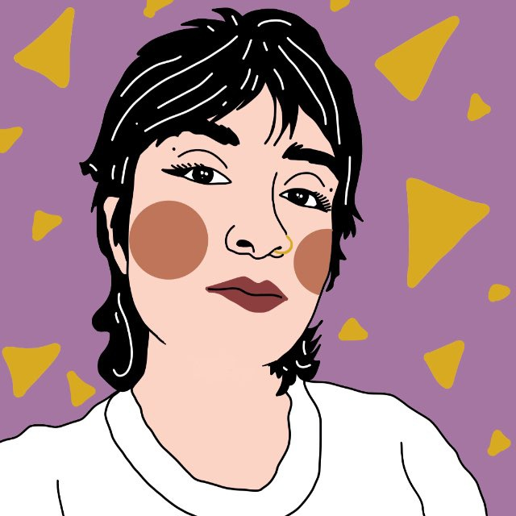

they / them
Sensor-based Geoinformatics Lab
Chair of Geoinformatics · University of Freiburg, Germany
I study how citizen science and machine learning can unlock new insights in plant phenology and biodiversity monitoring. My work sits at the intersection of ecology, computer vision, and large-scale opportunistic data — asking how unstructured observations from millions of people can contribute to rigorous environmental science.

What I work on
My research investigates how unstructured, citizen-generated data — combined with modern machine learning — can contribute to large-scale ecological monitoring. The main application domain is plant phenology and functional diversity.
Exploring how opportunistic observations from platforms like iNaturalist and Flora Incognita can be analysed for biodiversity and phenology research.
Revealing plant functional diversity at regional to continental scales by leveraging large photographic datasets and Earth observation data.
Developing deep learning pipelines to automate phenological annotation of plant images, replacing or augmenting expert-based labelling.
Using AI-based plant identification apps as a novel sensor system for tracking seasonal changes in vegetation across diverse ecosystems.
PANOPS — Revealing Earth's plant functional diversity with citizen science. A project at the Sensor-based Geoinformatics Lab, University of Freiburg.
Background
Output
Cutts, V; Katal, N; Löwer, C; Algar, A.C.; Steinbauer, M.J.; Irl, S.D.H.; Beierkuhnlein, C; Field, R (2019). The effect of small-scale topography on patterns of endemism within islands.
Leveraging Citizen Science and Machine Learning for Plant Phenology Monitoring · Co-chair of "Collection-based Research in Plant Ecology"
Enhancing Plant Phenological Monitoring Through Automated Annotation of Opportunistic Observations
Leveraging Citizen Science and Machine Learning for Plant Phenology Monitoring
Deep learning approach for revolutionizing phenology research: leveraging opportunistic data for ecological insights
Opportunistic vs. targeted observations: Can unsystematic records from an AI-based plant identification app contribute to phenology monitoring?
Application of Machine Learning in Plant Sciences
Observing Phenology using Flora Incognita Observations
Get in touch
I'm always happy to talk about citizen science, machine learning for ecology, or potential collaborations.